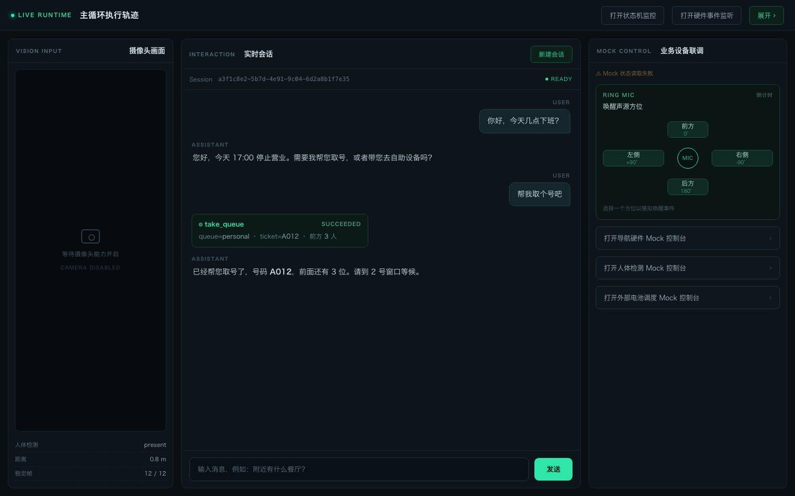

系统全景 01
先看一条线：从人走到机器面前，到机器把事办完并退回原位。这条线上有七个边界，每个边界都由一个明确的合同定义。
本章出现的 Adapter / Engine / Snapshot / 转发矩阵这些词，在 术语表 里都有一条带「不是什么」的定义。
一次完整交互
闭环：Adapter → EventBus → RobotState → Adapter
上面那条七步线是直线。但真实系统是闭环：设备产生的每一个事实，都要经过状态机判定，再反过来驱动设备。少了这个环，"一次完整交互"看起来就像一条有去无回的流水线。
拿"模型决定带路"走一遍：
| # | 谁 → 谁 | 发生了什么 | 谁有权拒绝 |
|---|---|---|---|
| 0 | Agent → Tool → Adapter | 模型决定带路，Tool 通过公共 facade 拿到导航 Adapter，下发指令 | Adapter 的准入检查 |
| ① | Adapter → EventBus | 底盘到达，Adapter 发布「导航已完成」这一事实 | 无——事实一旦发生不可撤销 |
| ② | EventBus → RobotState | 事件投递；转发矩阵判断当前状态下这类事实该不该被听见 | 转发矩阵：不放行就到此为止 |
| ③ | RobotState → Reaction | 转移矩阵允许收口，状态切换，reaction 入队 | 转移矩阵：不允许就留在原状态 |
| ④ | Reaction → Adapter | 下发数字人状态切换，屏幕变化，又产生新的事实 | Adapter 的准入检查 |
四跳之后回到起点。注意第 ④ 跳的产物是"新的事实"——它会再次进入 ①。所以这个环不是转一圈就停，而是每一圈都在改变系统的状态。
三条"谁能碰谁"
| 组件 | 能做 | 不能做 |
|---|---|---|
| Adapter | 发布事实、执行指令、提供快照 | 不知道 RobotState 存在；不做业务判断；不调用其他 Adapter |
| EventBus | 把事实投递给订阅方 | 不做路由决策；不保证顺序与幂等；不发命令 |
| RobotState | 判定放行、切换状态、触发 reaction | 不直接改设备；不持有 Adapter 实例；不替会话做决定 |
三条合起来说明一件事：环上每一段都不知道整条环。Adapter 只知道自己发了什么，总线只知道自己送给了谁，状态机只知道自己该不该放行。没有任何一个组件持有完整流程——这正是它能在没人值守的现场长期跑下去的原因。
这个环为什么不会死锁
因为每一跳都是发事实 / 收事实，没有同步调用回环。Tool 调 Adapter 那一跳确实是同步的，但它的返回值只表示"指令已受理"，不表示"事情已经办完"；真正的结果要等设备自己发事实回来。所以环上不存在"A 等 B、B 等 A"的等待链。
断在哪就停在哪：总线挂了，事实堆在发布方；状态机挂了，事实被订阅方忽略；Adapter 挂了，快照里能直接看到连接状态。没有任何一跳会把上游一起拖死。
代价也要说清楚
没有同步回环，就意味着没有"调用—返回"式的因果。想知道"这次导航到底成没成"，只能订阅事实，不能等返回值。所以每个 Adapter 都必须提供 Snapshot——否则外部没有任何手段确认状态。这不是可选项，是这个结构的必要配套。
这个环的三个关节分别展开在：03 Adapter 体系（合同与生命周期）、05 事件驱动（为什么只发事实）、07 机器人状态机（两张矩阵怎么判）。
两条总线，方向相反
| Brain Input | Brain Output | |
|---|---|---|
| 职责 | 校验并规范化输入，发布输入事实 | 校验输出命令，维护局部输出生命周期，发布输出事实 |
| 不负责 | 不跑 Agent、不排队、不持久化 | 不生成内容、不保证前端送达 |
| 实例粒度 | 进程级单例（不是每会话一个）；会话隔离靠 session_id 关联字段 | |
两条总线都是进程内 Engine Adapter。它们存在的理由不是"解耦好看"，而是让"输入已被本地接受"和"回答已经生成"这两件事有各自独立的、可观测的边界——否则一个 SSE 断连就能把"用户说了话"和"模型回答了"搅成一团。
运行时监控台
下面这个界面是开发期实际使用的运行时面板：左侧摄像头输入，中间实时会话与工具调用轨迹，右侧设备模拟控制台。整条业务链路都由 Mock 驱动，不需要真机在场。

它解决的是一个很实际的问题：具身系统很难调试。一句话说完，机器人开始动、屏幕开始变、语音开始播，你没法像调 Web 应用那样在浏览器里打个断点。所以把"当前处于哪个状态、上一句说了什么、调了哪个工具、设备回了什么"全部摊在一屏上，是唯一能用的办法。
注意右侧那栏：设备全部可以手动模拟。这不是玩具——它是让 默认测试不依赖真硬件 的前提。
谁持有谁
composition root（启动时构造一次）
├── AppConfig 不可变类型化配置
├── AdapterSet 本实例拥有的全部 Adapter 实例
├── AdapterRuntime 绑定 facade → 按序启动 → 失败反向回滚
└── ConversationRuntime 只编排交互生命周期
├── Agent / LangGraph → Tool.execute() → facade → Adapter
└── SessionRepository → 历史 / 检查点关键约束：除了 composition root，没有第二个地方可以创建、启动或停止 Adapter。业务代码拿到的永远是已经跑起来的实例。
部署形态：为什么是单机
系统跑在机器人本体的工控机上，不是云上。这带来三条硬约束，后面几乎所有设计都能追溯到这里：
- 没有运维——进程挂了没人重启，所以启动要么完整成功，要么完整回滚，不许留半启动状态；
- 没有外网——模型、检索、语音全部是内网服务，任一不可用都要降级到"还能说话"而不是"整机黑屏"；
- 资源有限——上下文必须精确计数并按预算压缩，不能靠"模型窗口很大"糊过去。
一个刻意的缺席：没有 Dispatcher
大多数同类系统里会有一个 ActionDispatcher 或 ToolRouter，把"模型说了要干什么"翻译成具体调用。这个项目明确禁止这类组件，并且用一条测试把它钉死（见 架构守护测试）。
理由是它必然退化成一个知道所有模块的总控大函数：新加一个能力要改它，改一个能力要担心影响别人，最后谁都不敢动。替代方案是让 Tool 自己就是那个翻译层——它拿着类型化 Input，在执行时按需向 facade 取 Adapter，出错就返回类型化错误。分发这件事被消解进每个 Tool 内部，而不是集中到一处。